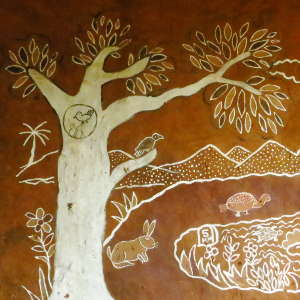

"Recall the face of the poorest and weakest man you have seen, and ask yourself if this step you contemplate is going to be of any use to him." - Mohandas.K.Gandhi
Sustainability forms the core of Desi Philosophy. It is committed to environment by ensuring sustainable practices are followed. The Natural dyes are extracted from locally available by products of farming and are available in abundance in the nearby area. Indigo, Pomegranate, Myrobalan, Kasimkari, Arecanut juice, Jack wood and other natural materials are used for dyeing of yarn.
The water used for dyeing is treated and reused to water plants. There are no harmful chemicals used in the entire process, thus making this environmentally friendly. The fabric is hand woven and the entire processes uses very less electricity, making this economically viable and sustainable.
The Charaka collective is formed by local women, is completely run by them and all the women involved are members of this collective. Decentralized units are setup in and around Heggodu for women who find it difficult to travel to Charaka. Most of the raw materials required (natural raw materials used for dyeing) are procured locally.The finished products are sold through Desi outlets all across Karnataka state. The beauty of this whole model is that the women pay themselves the salaries based on the work they accomplish. Emphasis is on the women’s all round welfare and not just treating them as workers who take home wages. Every woman is a member of the collective and is directly responsible for the success of the organization. They have internalized the culture of the organization and working here gives them a sense of pride.
 The current world is moving towards a market economy, with literature, education, society and culture becoming commercialized and leaning towards globalization. With most of our people turning towards western culture and practices, we have lost our connection with our land, with our ancestors, with our tradition. We are caught in a materialistic world, where money rules. Human relationships are dwindling and we are becoming more and more distant from our roots. With extensive industrialization, we have indiscriminately exploited our natural resources, destroyed our forests and polluted our water sources. This has increased our reliance on machines and with peak oil crisis becoming a reality, we are standing at the edge of a massive collapse of our economy leading to huge environmental disasters. With growing consumerism among the people, our society has collectively forgotten our villages, which were once considered our backbones.
Our country still has a large population of farmers, handloom weavers who form the majority of workforce. With sustainable practices in these two sectors, we could improve our chances of facing an impending disaster. Desi strives to make the villages stronger, with an ideal amalgamation of physical labour and progressive thinking and ideals. With promoting sustainable agricultural practices, village industries like handlooms and handicrafts, we could make our villages self sufficient, reduce migration and retain our natural resources. To do this, we have to overcome the barriers of caste discrimination, gender biases and superstitions that are deep rooted in our villages today. India stands at an interesting juncture today with a large population of people still practicing traditional practices which need to be revived and promoted, since they are based on the principles of sustainability.
DESI believes in simplicity, be it in the clothes, the shop ambience or in their administration. The designs are developed by designers who have understood the culture of the people at Charaka and have tailored their designs to suit their abilities without pushing them out of their comfort zone. At the same time, sufficient space is given to the artisans at Charaka to explore their creativity and come up with their own designs. The fabric is simple, coarse and easy to maintain. The dyes used are all of plant origin and are not harmful for our health. The organization is run by people who have been working with Charaka and Desi for a long time and have grown organically to managerial positions. Complex systems like outsourced weaving units across 15 locations is well co-ordinated without having to deploy any software to manage them. There is no hurry for growth; the emphasis is on sustaining the model rather than expansion.
 DESI makes clothes affordable. The profit margins are low and the profits are redistributed to all the members of the community. The pricing of the products are such that it appeals to the middle class urban as well as the consumers in the towns. Before colonization, our country had a rich tradition of Handlooms and it was worn by everyone as everyday wear. Post colonization, with the advent of mills and powerlooms, the handloom weavers lost their livelihood, thereby making the mill clothes more accessible. When handlooms were revived, recently, it is done only in smaller pockets, with high costs, making them "elitist" and unaffordable the most people. DESI aims to improve accessibility of handloom to a larger population by keeping the designs simple, the entire production in rural areas and reducing the overhead costs. It employs low-skilled and medium-skilled weavers who are the worst affected and producing coarse fabric that can be used for everyday wear.
DESI makes clothes affordable. The profit margins are low and the profits are redistributed to all the members of the community. The pricing of the products are such that it appeals to the middle class urban as well as the consumers in the towns. Before colonization, our country had a rich tradition of Handlooms and it was worn by everyone as everyday wear. Post colonization, with the advent of mills and powerlooms, the handloom weavers lost their livelihood, thereby making the mill clothes more accessible. When handlooms were revived, recently, it is done only in smaller pockets, with high costs, making them "elitist" and unaffordable the most people. DESI aims to improve accessibility of handloom to a larger population by keeping the designs simple, the entire production in rural areas and reducing the overhead costs. It employs low-skilled and medium-skilled weavers who are the worst affected and producing coarse fabric that can be used for everyday wear.
Traditionally, Karnataka Sarees like the Ilkal sarees were woven in Kondichukki, Gadidadi, Sada, Checks, Chikkiparas, and other designs. Desi has taken up the task of reviving these traditional designs using naturally dyed yarn. According to the Handloom Reservation Act of 1985, there are 11 varieties of products that are reserved to be woven by Handloom like Dhoti, Towels, Sarees etc. Desi is committed to reviving the tradition of Handloom weaving by engaging the traditional weavers to produce these again, giving them a sustained, year round income through weaving. The traditional handloom weavers have lost their livelihood and moved away from their profession to become labourers. Desi aims to give them a decent livelihood to keep alive their traditional skills.